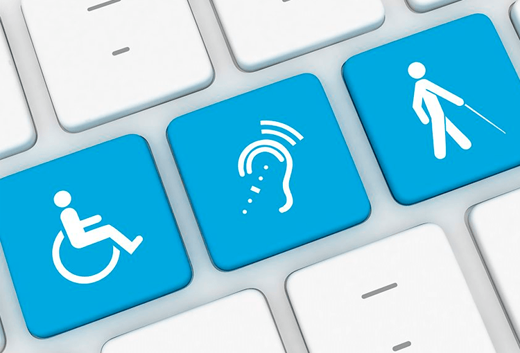

Accesibilidad Web
En este apartado encotraran lo referente aaccesibiliad web, como su definición, importancia, también sus principos.
¿Que es la Accesibilidad Web?
También conocida como accesibilidad digital, es lo que garantiza que todo contenido digital
sea accesible para cualquier persona, incluyendo las personas con un o varios tipos de discapacidades
para brindar comodidad al usar el recurso.
Tratara de birndar una experiencia que ofrezca la psoiblidad de usar el contenido digital si imponer algun tipo de barrera
que impida a los usaurios ya sea el acceso o uso, adaptandose a las habilidades y nesecidades de cada persona.
Importancia
Es un aspecto indispnesable para el uso del sitio o cualquier otro recurso por parte de todas las personas con discapacidades. No es solo pensar en que la pagina se vea bien o que tenga la información, porque esta puede estar lo más completa y que sea vea espectacular pero si no se tiene accesibilidad en primera instancia se pierden usuarios potenciales.
Importacia legal y ética
Ahora bien, es una resposablidad ética y una obligación legal que garantiza que todas las personas sin importan en lo mas minimo sus discapacidades o capacidades para acceder a informacion en el entorno digital.
Principos WCAG
Son cuatro principos clave que ayudan a resumir que debe cumplir cada uno de los sitios para que sean considerados como accesibles. Son la base de todo diseño web funcional para todos.
1. Perceptible
Implica que el contenido de ser presentado de una manera que el usario pueda percibir la infromacion con algunos de sus sentidos. Un ejemplo muy claro es el texto alternativo que se implemnta en las imagenes y los subtitulos en los videos.
2. Operable
Significa que el usuario pueda nevegar y usar todas las funciones del sitio sin problemas. Esto se puede logar implemntado las funcionalidades con el uso del teclado, asi como enlaces claros y que no haya elementos que confundan al usaurio.
3. Comprensible
Todo contenido y interfaz debe ser facil de entender. Lo que implica el uso de lenguaje claro, instrucciones sencillas y el evitar alguna sorpresa en la navegacion.
4. Robusto
El contenido debe ser compatible con diversas tecnologías, incluyendo navegadores y herramientas de asistencia. Lo que asegura que el sitio funcione siempre.